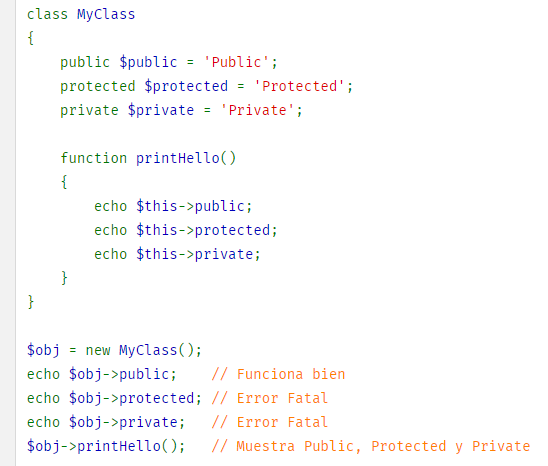
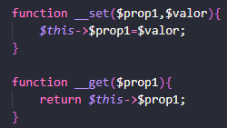
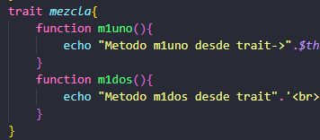
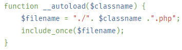

Objetos & Clases
Visibilidad de las variables
La visibilidad de una propiedad, un método o (a partir de PHP 7.1.0) una constante se puede definir anteponiendo a su declaración una de las palabras reservadas public, protected o private. A los miembros de clase declarados como 'public' se puede acceder desde donde sea; a los miembros declarados como 'protected', solo desde la misma clase, mediante clases heredadas o desde la clase padre. A los miembros declarados como 'private' únicamente se puede acceder desde la clase que los definió.
Llamadas desde objetos:
$objuno = new uno; //cuando es constructor por defecto se permite llamar sin () -> new uno;
A variables o métodos publicos se llama con el objeto. $obj->$metodo();
A variables o métodos estáticos se llama con: nombreClase::$metodo()
Llamar a variable de la clase padre, desde la hija: parent::m1uno();
Los setters y getters se llaman: $objuno->var1=7; Se utilizan variables de variables.
Los destructores __destruct() se invocan al eliminar una clase, puede ser con exito().
Los "traits" se utilizan para simular la herencia múltiple. Se inicializan cuando se crea un objeto de la clase que hereda.
Funciones de Clases
Include/Require
La sentencia include incluye y evalúa el archivo especificado.
Include_once - > Incluye y evalúa el fichero solo una vez, no permite que se repita.
require es idéntico a include excepto que en caso de fallo producirá un error fatal de nivel E_COMPILE_ERROR. En otras palabras, éste detiene el script mientras que include sólo emitirá una advertencia (E_WARNING) lo cual permite continuar el script.
La sentencia require_once es idéntica a require excepto que PHP verificará si el archivo ya ha sido incluido y si es así, no se incluye (require) de nuevo.
A los archivos php que se destinan a inclusión, se ponen con extensión nombre.inc.php.
Poner el mismo nombre de clase y fichero sirve a la hora de utilizar __autoload, este hace un include de la clase si esta se llama igual que la variable; Cada nuevo objeto se carga un nuevo include, aunque sea de la misma clase. Para que solo se incluya una vez, se pone en el __autoload, un include_once.
*Recorder include_path de php.ini
